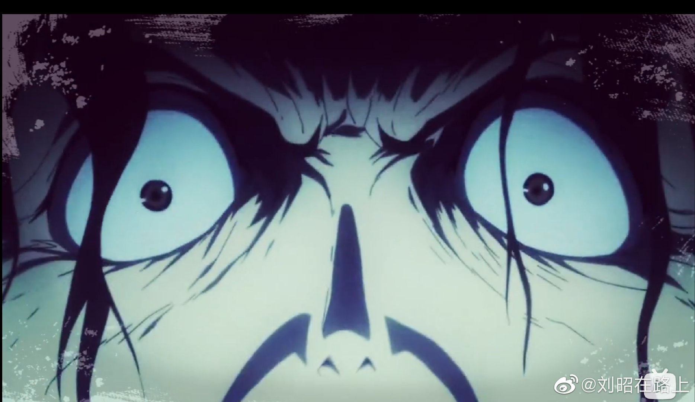

结论：不要给公众写那些暴徒的内心世界成长历程。
@刘昭在路上:
关于要不要给公众写那些暴徒的内心世界成长历程啥的，多说两句。
先给结论就是不要，下面不喊口号，从实操角度说说为什么。
首先，信息的接受，是需要一定门槛的。
最简单的例子，有很多图片视频包括书籍都是“少儿不宜”的，成年人可以看的未必可以给小孩子看，这已经是社会共识了。而满18岁了，就适合接受所有信息吗？其实并不是，比如有人密集恐惧，有人不小心刷到一张血腥图能三天睡不着觉，这都是说，哪怕是成人，也未必有能力接收所有信息。
恶徒的内心世界、成长经历，也是这样一类信息，甚至对一部分人而言，还处于“不知道自己没能力看”的状态。
并不是说我们不需要去了解恶徒为什么会成为恶徒，就个体而言这里有很多随机性，就群体而言又有许多统计规律，了解这些恶徒为什么会成为恶徒，在预防犯罪等方面是有很大积极意义的。
但是，这个了解是有相当门槛的。如果只是需要统计数据，还好，比如会有相关部门统计罪犯的收入水平、受教育程度、有什么特定经历等等，来看我们从宏观上修正什么政策可以降低犯罪，这时恶徒只是被抽象成了一堆数据，对接受者的影响不大。但如果要深入了解ta是怎么想到的、为什么会这么想、成长经历是怎样的、甚至体验是怎样的、思维逻辑是怎样的，等等，这需要相当程度的专业底子在，同时一定是团队作战的（我的一些同行会做类似的工作，每个人背后都有团队支撑避免陷进去），否则接受这些信息就很可能被恶徒带进去，甚至产生犯罪传染。
从这个角度讲，恶徒的内心世界不需要、也不应该对公众开放。
第二，过多的曝光，会产生示范效应。
就像很多捣乱的孩子是为了博取家长的关注一样，有很多恶徒在做恶时要的就是关注，而过多的曝光一来会让他得偿所愿，二来会让本来就有犯罪倾向的人意识到这么做真的可以得到ta想要的关注，这是非常糟糕的社会影响。
可以类比的是，自杀者的心路历程也不宜过多报导，原因同样是会产生自杀传染（当时富士康X连跳就是典型的自杀传染），在少数人的生命权和多数人的八卦权之间生命权优先。
第三，对受害者不公。
对恶徒的过度关注，会引发一些群众对恶徒的共情，并且一定会消耗相应的舆论资源，这对受害者是极度不公的。
谁都有痛苦的经历，但选择了恶性犯罪、把屠刀挥向无辜者的人，公众不应再为其浪费一丁点社会资源（而应该把资源多向受害者倾斜），这是起码的正义。
就像我之前发微博说的，去搞清楚恶徒为什么成为恶徒、甚至去理解恶徒为什么成为恶徒，这是专业人员的事，大众&媒体要做的，就是把一口唾沫啐在他的尸体上，然后把目光移开，转身离去。
=============
还真碰上几个找上门来嚷嚷着“我就要听”还满嘴脏话的，只能说，第一，请尽量避免知识太少而想得太多；第二，吃瓜权不是基本人权，别说什么治理根源，有的是专业人员操这个心了，“我就要听”背后只是打着高尚旗号的廉价吃瓜权；第三，所谓了解恶行避免悲剧啥的有的是更顺畅的渠道，拿杀人犯的心路历程学养孩子啥的是屎里淘金，且附带毒素；最后，嚷嚷着“我就要听”的这种只想着自己需求一点约束都闹翻天的人其实恰恰就是犯罪传染易感人群，最后，想听的故事无非也就是廉价的套路：悲惨的童年，不公的社会，定体问，冷抖哭，还有啥？
拉黑不送。
先给结论就是不要，下面不喊口号，从实操角度说说为什么。
首先，信息的接受，是需要一定门槛的。
最简单的例子，有很多图片视频包括书籍都是“少儿不宜”的，成年人可以看的未必可以给小孩子看，这已经是社会共识了。而满18岁了，就适合接受所有信息吗？其实并不是，比如有人密集恐惧，有人不小心刷到一张血腥图能三天睡不着觉，这都是说，哪怕是成人，也未必有能力接收所有信息。
恶徒的内心世界、成长经历，也是这样一类信息，甚至对一部分人而言，还处于“不知道自己没能力看”的状态。
并不是说我们不需要去了解恶徒为什么会成为恶徒，就个体而言这里有很多随机性，就群体而言又有许多统计规律，了解这些恶徒为什么会成为恶徒，在预防犯罪等方面是有很大积极意义的。
但是，这个了解是有相当门槛的。如果只是需要统计数据，还好，比如会有相关部门统计罪犯的收入水平、受教育程度、有什么特定经历等等，来看我们从宏观上修正什么政策可以降低犯罪，这时恶徒只是被抽象成了一堆数据，对接受者的影响不大。但如果要深入了解ta是怎么想到的、为什么会这么想、成长经历是怎样的、甚至体验是怎样的、思维逻辑是怎样的，等等，这需要相当程度的专业底子在，同时一定是团队作战的（我的一些同行会做类似的工作，每个人背后都有团队支撑避免陷进去），否则接受这些信息就很可能被恶徒带进去，甚至产生犯罪传染。
从这个角度讲，恶徒的内心世界不需要、也不应该对公众开放。
第二，过多的曝光，会产生示范效应。
就像很多捣乱的孩子是为了博取家长的关注一样，有很多恶徒在做恶时要的就是关注，而过多的曝光一来会让他得偿所愿，二来会让本来就有犯罪倾向的人意识到这么做真的可以得到ta想要的关注，这是非常糟糕的社会影响。
可以类比的是，自杀者的心路历程也不宜过多报导，原因同样是会产生自杀传染（当时富士康X连跳就是典型的自杀传染），在少数人的生命权和多数人的八卦权之间生命权优先。
第三，对受害者不公。
对恶徒的过度关注，会引发一些群众对恶徒的共情，并且一定会消耗相应的舆论资源，这对受害者是极度不公的。
谁都有痛苦的经历，但选择了恶性犯罪、把屠刀挥向无辜者的人，公众不应再为其浪费一丁点社会资源（而应该把资源多向受害者倾斜），这是起码的正义。
就像我之前发微博说的，去搞清楚恶徒为什么成为恶徒、甚至去理解恶徒为什么成为恶徒，这是专业人员的事，大众&媒体要做的，就是把一口唾沫啐在他的尸体上，然后把目光移开，转身离去。
=============
还真碰上几个找上门来嚷嚷着“我就要听”还满嘴脏话的，只能说，第一，请尽量避免知识太少而想得太多；第二，吃瓜权不是基本人权，别说什么治理根源，有的是专业人员操这个心了，“我就要听”背后只是打着高尚旗号的廉价吃瓜权；第三，所谓了解恶行避免悲剧啥的有的是更顺畅的渠道，拿杀人犯的心路历程学养孩子啥的是屎里淘金，且附带毒素；最后，嚷嚷着“我就要听”的这种只想着自己需求一点约束都闹翻天的人其实恰恰就是犯罪传染易感人群，最后，想听的故事无非也就是廉价的套路：悲惨的童年，不公的社会，定体问，冷抖哭，还有啥？
拉黑不送。
- 